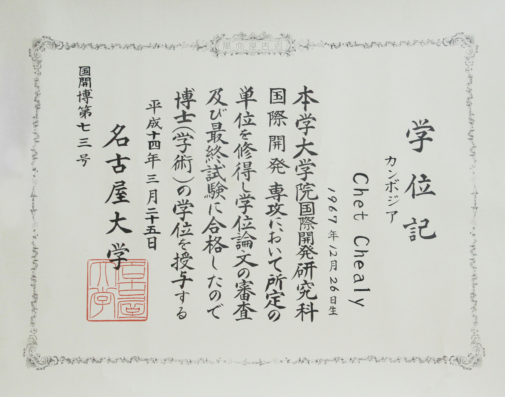
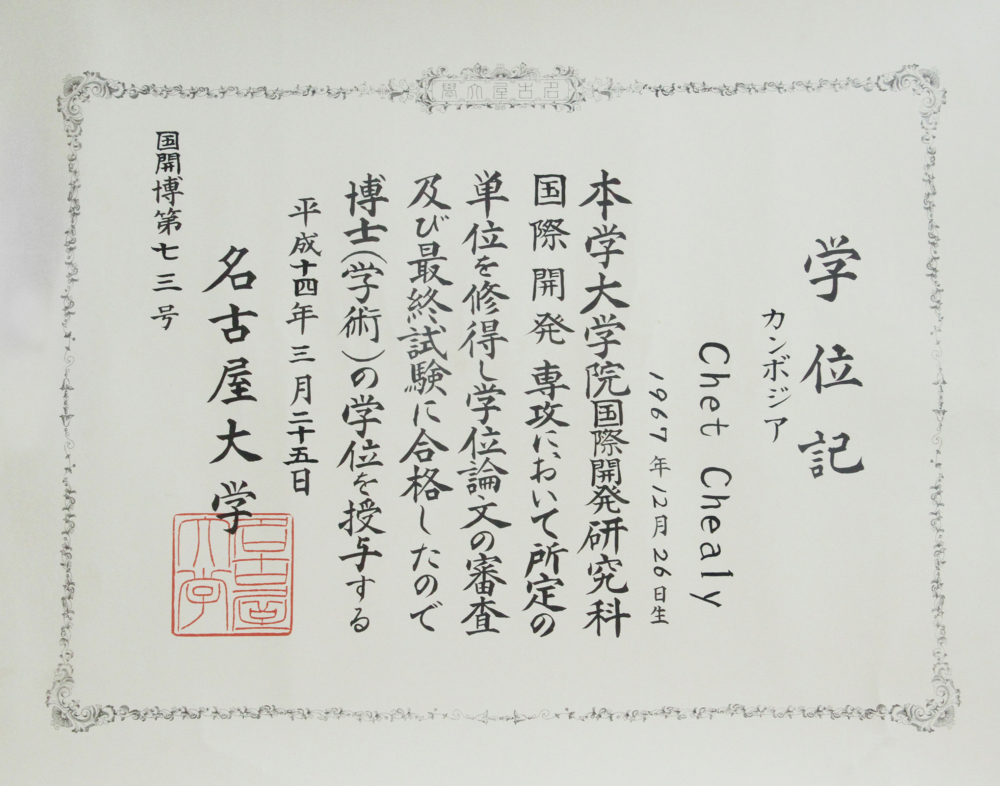
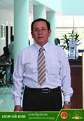
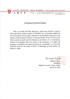
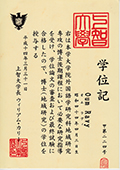
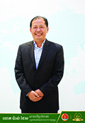

គណៈគ្រប់គ្រងនៃសាកលវិទ្យាល័យភូមិន្ទភ្នំពេញ
| រូបថត | ឈ្មោះ | មុខងារ | ទទួលបន្ទុក | កំរិតសញ្ញាបត្រ | សាកលវិទ្យាល័យ | សញ្ញាបត្រ |
|---|---|---|---|---|---|---|
| ឯ.បណ្ឌិត ជេត ជាលី Chet Chealy |
សាកលវិទ្យាធិការ | ទូទៅ | បណ្ឌិត | Nagoya University |
 

|
|

|
ឯ. បណ្ឌិត សុខ វណ្ណី Sok Vanny |
សាកលវិទ្យាធិការរង | ការងារស្រាវជ្រាវ និង សិក្សាក្រោយឧត្តម | បណ្ឌិត | Distance Learning Institutes, Indonesia |
.jpg)
|
|  | លោក ពន់ ឆាយ Ponn Chhay |
សាកលវិទ្យាធិការរង | ហិរញ្ញវត្ថុ គណនេយ្យ និងយុវជន | បរិញ្ញាបត្រជាន់ខ្ពស់ | N/A | N/A |
|
លោកស្រី បណ្ឌិត អ៊ុំ រ៉ាវី Oum Ravy |
សាកលវិទ្យាធិការរង | ទំនាក់ទំនងអន្តរជាតិ និងកិច្ចការនិស្សិត | បណ្ឌិត | Sophia University |   | |
|  | លោក ប៉ាល់ ដែស Phal Des |
សាកលវិទ្យាធិការរង | ការសិក្សា និងគុណភាពអប់រំ | បរិញ្ញាបត្រជាន់ខ្ពស់ | Université libre de Bruxelles |
.jpg)
|
.jpg)
|
លោក កៀន តាក់ Kean Tak |
សាកលវិទ្យាធិការរង | ICT/Digital Technology, Industrial Linkages, Student Affairs, & Media | បរិញ្ញាបត្រជាន់ខ្ពស់ |
សាកលវិទ្យាល័យ
ភូមិន្ទភ្នំពេញ Royal University of Phnom Penh |


|
| លោក ឈុនហុក Chhun Hok |
សាកលវិទ្យាធិការរង | រដ្ឋបាល និងបុគ្គលិក | បរិញ្ញាបត្រជាន់ខ្ពស់ | N/A | N/A |